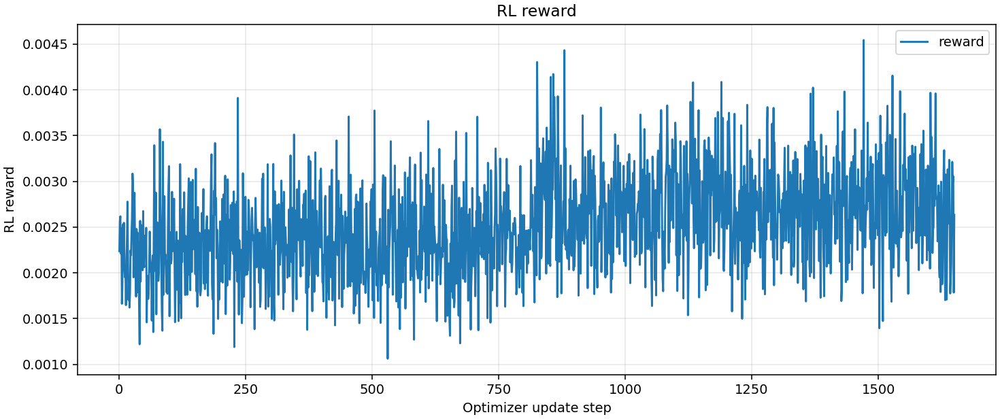
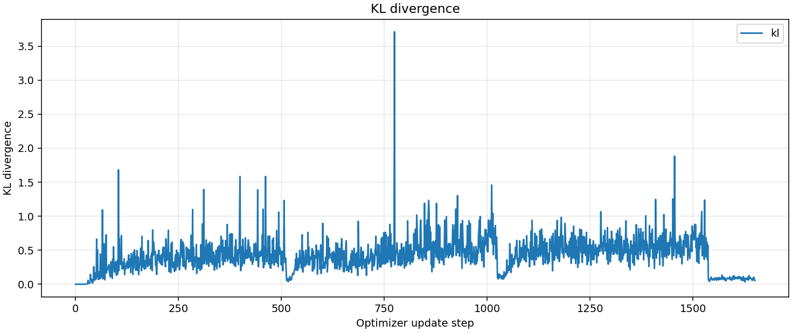
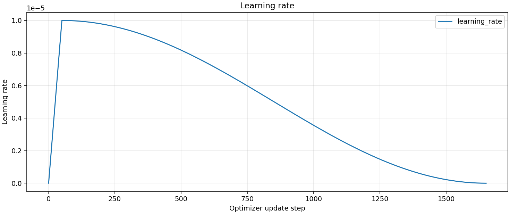
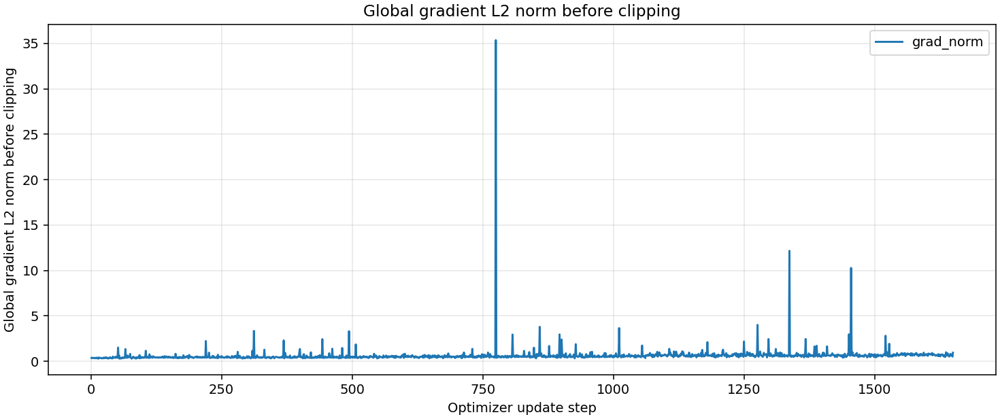
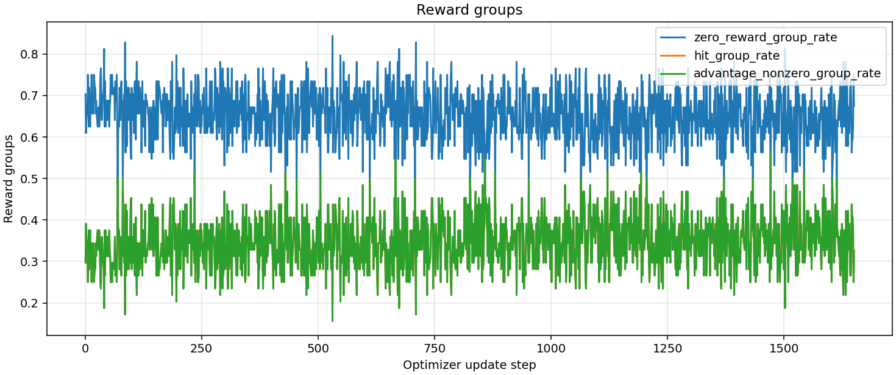
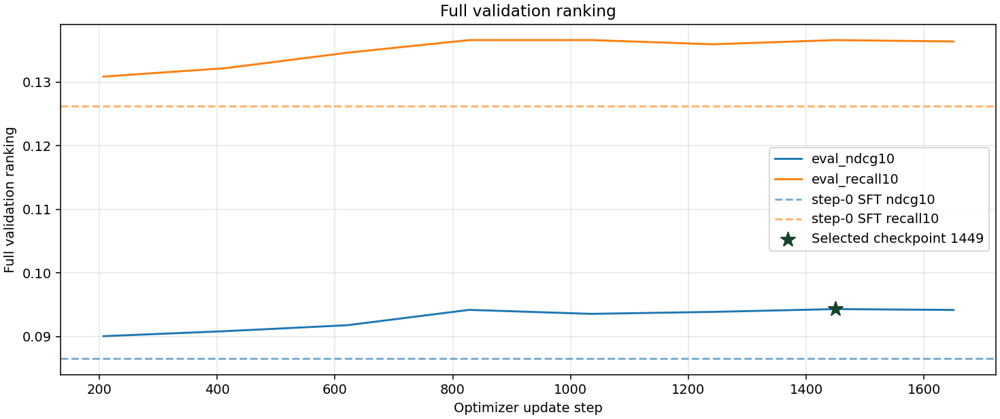

Industrial_and_Scientific RL 训练报告
训练：completed；最终测试：passed；对照：passed
运行兼容修复与对照范围
本次 RL 已应用所记录的 DeepSpeed 梯度累积兼容修复。基线采用既有 SFT 固定导出，没有因此自动重训 SFT。历史 SFT 在同一 DeepSpeed 配置下也可能受影响，因此本次对比无法分别量化算法和梯度累积行为变化的贡献。
此前失败尝试不作为 RL 结果，不纳入任何指标比较。
{'applied': True, 'version': '0.18.0', 'already_applied': False, 'original_source_sha256': '8aab6ad622662a54879f409636e8fef248b6ab42d51cf69ab2131f5caa99d542', 'patched_source_sha256': '4555f9e0a1b19fb531b6d01b91e17bcea1f02d541811f4bf8403e70b8decbb70', 'method': 'deepspeed.runtime.zero.stage_1_and_2.DeepSpeedZeroOptimizer.independent_gradient_partition_epilogue', 'scope': 'current_rl_process_only', 'installed_package_modified': False, 'reason': 'Retain prior microbatch gradients in all_grad_tensors before the accumulation boundary'}训练 PDF · 验证 PDF · 训练 JSON · 验证 JSON · 对照 JSON · 对照 CSV · 对照 HTML
RL 使用 reward、KL、梯度与验证排名监控；优化目标不等同 teacher-forced SFT loss。缺失指标不表示0。
| 指标 | 观测数 | 均值 | 最近值 |
|---|
| advantage_nonzero_group_rate | 1650 | 0.347447 | 0.325 |
| eval_ndcg10 | 8 | 0.092865 | 0.0941936 |
| eval_recall10 | 8 | 0.134957 | 0.136364 |
| grad_norm | 1650 | 0.623377 | 0.947114 |
| hit_group_rate | 1650 | 0.347447 | 0.325 |
| kl | 1650 | 0.426004 | 0.0554077 |
| learning_rate | 1650 | 5e-06 | 9.63828e-12 |
| reward | 1650 | 0.00251559 | 0.00263489 |
| rewards/ndcg_rule_reward | 1650 | -0.0191998 | -0.0176776 |
| rewards/rule_reward | 1650 | 0.0217154 | 0.0203125 |
| task/description2sid/reward | 1608 | 0.00131982 | 0 |
| task/description2sid/zero_reward_group_rate | 1608 | 0.778507 | 1 |
| task/sid_sequence_recommendation/reward | 1650 | 0.00210274 | 0.00224516 |
| task/sid_sequence_recommendation/zero_reward_group_rate | 1650 | 0.69982 | 0.725 |
| task/title2sid/reward | 1628 | 0.00558983 | 0.00671254 |
| task/title2sid/zero_reward_group_rate | 1628 | 0.293393 | 0.2 |
| task/title_history_to_sid/reward | 1650 | 0.00319108 | 0.00265469 |
| task/title_history_to_sid/zero_reward_group_rate | 1650 | 0.580167 | 0.642857 |
| zero_reward_group_rate | 1650 | 0.652553 | 0.675 |
RL reward

KL divergence

Learning rate

Global gradient L2 norm before clipping

Reward groups

Full validation ranking

SFT / RL 完整测试对照
状态：passed；测试指标用于最终报告。推荐仅依据完整验证集 NDCG@10。
{'status': 'passed', 'basis': 'complete_validation_ndcg10', 'test_used_for_selection': False, 'recommended_model': 'RL', 'sft_validation_ndcg10': 0.0865339128170242, 'rl_validation_ndcg10': 0.09432758435090574, 'difference_percentage_points': 0.7793671533881539, 'tie_rule': 'Retain parent SFT when validation NDCG@10 does not improve'}是否符合改善预期
mixed：部分指标改善，但未满足验证、测试和召回率共同改善的标准。
improved：验证与测试 NDCG@10 均升，测试 HR@10/50 不降；mixed：指标有涨有跌，或仅部分提升且未满足共同改善条件；not_improved：四项主指标均无正收益；pending：完整验证与双侧测试尚未通过。该描述性分析不改变仅按验证集进行的选模。
| 指标 | 无 RL 的 SFT | RL | 差值（百分点） | 方向 |
|---|
| 验证 NDCG@10 | 8.65339% | 9.43276% | 0.779367 | up |
| 独立测试 NDCG@10 | 8.30009% | 9.21269% | 0.912608 | up |
| 独立测试 HR@10 | 12.94948% | 13.76572% | 0.816236 | up |
| 独立测试 HR@50 | 22.10457% | 21.66336% | -0.441209 | down |
| HR@50 分组 | 样本数 | SFT 命中 | RL 命中 | 命中差 | SFT HR@50 | RL HR@50 | 差值（百分点） |
|---|
| behavior_warm | 4386 | 1001 | 979 | -22 | 22.82262% | 22.32102% | -0.501596 |
| behavior_cold | 147 | 1 | 3 | 2 | 0.68027% | 2.04082% | 1.36054 |
单次种子结果是描述性证据；冷数据按实际样本数和命中数解读，不能用少量命中证明稳定改善。
- Only one training seed was evaluated. Changes are descriptive; repeated-seed uncertainty was not estimated.
- The behavior-cold group has 147 test rows; one hit changes HR@50 by 0.680272 percentage points. A few hits do not establish a reliable cold-item gain.
- This RL run applies the recorded DeepSpeed gradient-accumulation compatibility correction.
- The SFT baseline uses its existing fixed export; it was not retrained for this comparison.
- Historical SFT training with the same DeepSpeed configuration may also have been affected. This comparison cannot isolate algorithm gains from changes in gradient-accumulation behavior.
- Failed earlier attempts are not RL results and are excluded from all metric comparisons.
HR 等同单目标 Recall；行为冷按训练商品 ID 判定。冷样本以实际行数与命中数解读；缺失值显示 —。
| 分组 | 样本 | K | SFT Recall | RL Recall | 差值 pp | SFT NDCG | RL NDCG | 差值 pp | SFT 命中 | RL 命中 |
|---|
| overall | 4533 | 1 | 4.85330% | 5.64747% | 0.794176 | 4.85330% | 5.64747% | 0.794176 | 220 | 256 |
| overall | 4533 | 3 | 7.54467% | 8.69182% | 1.14714 | 6.38962% | 7.38627% | 0.996655 | 342 | 394 |
| overall | 4533 | 5 | 9.41981% | 10.85374% | 1.43393 | 7.16433% | 8.27289% | 1.10857 | 427 | 492 |
| overall | 4533 | 10 | 12.94948% | 13.76572% | 0.816236 | 8.30009% | 9.21269% | 0.912608 | 587 | 624 |
| overall | 4533 | 20 | 16.47915% | 16.89830% | 0.419148 | 9.19019% | 10.00292% | 0.812723 | 747 | 766 |
| overall | 4533 | 50 | 22.10457% | 21.66336% | -0.441209 | 10.30845% | 10.94891% | 0.640464 | 1002 | 982 |
| behavior_warm | 4386 | 1 | 5.01596% | 5.83675% | 0.820793 | 5.01596% | 5.83675% | 0.820793 | 220 | 256 |
| behavior_warm | 4386 | 3 | 7.79754% | 8.98313% | 1.18559 | 6.60377% | 7.63383% | 1.03006 | 342 | 394 |
| behavior_warm | 4386 | 5 | 9.73552% | 11.21751% | 1.48199 | 7.40444% | 8.55016% | 1.14572 | 427 | 492 |
| behavior_warm | 4386 | 10 | 13.38349% | 14.20429% | 0.820793 | 8.57827% | 9.51487% | 0.936604 | 587 | 623 |
| behavior_warm | 4386 | 20 | 17.03146% | 17.44186% | 0.410397 | 9.49821% | 10.33158% | 0.833371 | 747 | 765 |
| behavior_warm | 4386 | 50 | 22.82262% | 22.32102% | -0.501596 | 10.64974% | 11.29961% | 0.649868 | 1001 | 979 |
| behavior_cold | 147 | 1 | 0.00000% | 0.00000% | 0 | 0.00000% | 0.00000% | 0 | 0 | 0 |
| behavior_cold | 147 | 3 | 0.00000% | 0.00000% | 0 | 0.00000% | 0.00000% | 0 | 0 | 0 |
| behavior_cold | 147 | 5 | 0.00000% | 0.00000% | 0 | 0.00000% | 0.00000% | 0 | 0 | 0 |
| behavior_cold | 147 | 10 | 0.00000% | 0.68027% | 0.680272 | 0.00000% | 0.19664% | 0.196643 | 0 | 1 |
| behavior_cold | 147 | 20 | 0.00000% | 0.68027% | 0.680272 | 0.00000% | 0.19664% | 0.196643 | 0 | 1 |
| behavior_cold | 147 | 50 | 0.68027% | 2.04082% | 1.36054 | 0.12537% | 0.48524% | 0.359877 | 1 | 3 |
| repeat_last | 122 | 1 | 68.03279% | 76.22951% | 8.19672 | 68.03279% | 76.22951% | 8.19672 | 83 | 93 |
| repeat_last | 122 | 3 | 81.96721% | 90.16393% | 8.19672 | 76.50247% | 84.59187% | 8.0894 | 100 | 110 |
| repeat_last | 122 | 5 | 85.24590% | 91.80328% | 6.55738 | 77.91453% | 85.26198% | 7.34745 | 104 | 112 |
| repeat_last | 122 | 10 | 91.80328% | 92.62295% | 0.819672 | 79.94066% | 85.52056% | 5.5799 | 112 | 113 |
| repeat_last | 122 | 20 | 94.26230% | 94.26230% | 0 | 80.56365% | 85.95735% | 5.3937 | 115 | 115 |
| repeat_last | 122 | 50 | 95.08197% | 96.72131% | 1.63934 | 80.72346% | 86.43358% | 5.71012 | 116 | 118 |
| not_repeat_last | 4411 | 1 | 3.10587% | 3.69531% | 0.589436 | 3.10587% | 3.69531% | 0.589436 | 137 | 163 |
| not_repeat_last | 4411 | 3 | 5.48628% | 6.43845% | 0.952165 | 4.45043% | 5.25091% | 0.800483 | 242 | 284 |
| not_repeat_last | 4411 | 5 | 7.32260% | 8.61483% | 1.29222 | 5.20751% | 6.14352% | 0.93601 | 323 | 380 |
| not_repeat_last | 4411 | 10 | 10.76853% | 11.58467% | 0.816141 | 6.31864% | 7.10216% | 0.783519 | 475 | 511 |
| not_repeat_last | 4411 | 20 | 14.32782% | 14.75856% | 0.430741 | 7.21614% | 7.90216% | 0.686022 | 632 | 651 |
| not_repeat_last | 4411 | 50 | 20.08615% | 19.58740% | -0.498753 | 8.36090% | 8.86115% | 0.500246 | 886 | 864 |
| collision_free | 4216 | 1 | 2.06357% | 2.22960% | 0.166034 | 2.06357% | 2.22960% | 0.166034 | 87 | 94 |
| collision_free | 4216 | 3 | 4.03226% | 4.57780% | 0.545541 | 3.17524% | 3.55587% | 0.380632 | 170 | 193 |
| collision_free | 4216 | 5 | 5.76376% | 6.66509% | 0.901328 | 3.89081% | 4.41532% | 0.524506 | 243 | 281 |
| collision_free | 4216 | 10 | 8.91841% | 9.55882% | 0.640417 | 4.90376% | 5.34662% | 0.442862 | 376 | 403 |
| collision_free | 4216 | 20 | 12.16793% | 12.52372% | 0.355787 | 5.72274% | 6.09601% | 0.373271 | 513 | 528 |
| collision_free | 4216 | 50 | 17.64706% | 17.12524% | -0.521822 | 6.81191% | 7.00841% | 0.196505 | 744 | 722 |
| collision_affected | 317 | 1 | 41.95584% | 51.10410% | 9.14826 | 41.95584% | 51.10410% | 9.14826 | 133 | 162 |
| collision_affected | 317 | 3 | 54.25868% | 63.40694% | 9.14826 | 49.13982% | 58.32939% | 9.18957 | 172 | 201 |
| collision_affected | 317 | 5 | 58.04416% | 66.56151% | 8.51735 | 50.70102% | 59.57740% | 8.87637 | 184 | 211 |
| collision_affected | 317 | 10 | 66.56151% | 69.71609% | 3.15457 | 53.47011% | 60.63019% | 7.16008 | 211 | 221 |
| collision_affected | 317 | 20 | 73.81703% | 75.07886% | 1.26183 | 55.30627% | 61.96357% | 6.6573 | 234 | 238 |
| collision_affected | 317 | 50 | 81.38801% | 82.01893% | 0.630915 | 56.81135% | 63.35633% | 6.54497 | 258 | 260 |
| behavior_cold_collision_free | 147 | 1 | 0.00000% | 0.00000% | 0 | 0.00000% | 0.00000% | 0 | 0 | 0 |
| behavior_cold_collision_free | 147 | 3 | 0.00000% | 0.00000% | 0 | 0.00000% | 0.00000% | 0 | 0 | 0 |
| behavior_cold_collision_free | 147 | 5 | 0.00000% | 0.00000% | 0 | 0.00000% | 0.00000% | 0 | 0 | 0 |
| behavior_cold_collision_free | 147 | 10 | 0.00000% | 0.68027% | 0.680272 | 0.00000% | 0.19664% | 0.196643 | 0 | 1 |
| behavior_cold_collision_free | 147 | 20 | 0.00000% | 0.68027% | 0.680272 | 0.00000% | 0.19664% | 0.196643 | 0 | 1 |
| behavior_cold_collision_free | 147 | 50 | 0.68027% | 2.04082% | 1.36054 | 0.12537% | 0.48524% | 0.359877 | 1 | 3 |
| behavior_cold_collision_affected | 0 | 1 | — | — | — | — | — | — | 0 | 0 |
| behavior_cold_collision_affected | 0 | 3 | — | — | — | — | — | — | 0 | 0 |
| behavior_cold_collision_affected | 0 | 5 | — | — | — | — | — | — | 0 | 0 |
| behavior_cold_collision_affected | 0 | 10 | — | — | — | — | — | — | 0 | 0 |
| behavior_cold_collision_affected | 0 | 20 | — | — | — | — | — | — | 0 | 0 |
| behavior_cold_collision_affected | 0 | 50 | — | — | — | — | — | — | 0 | 0 |